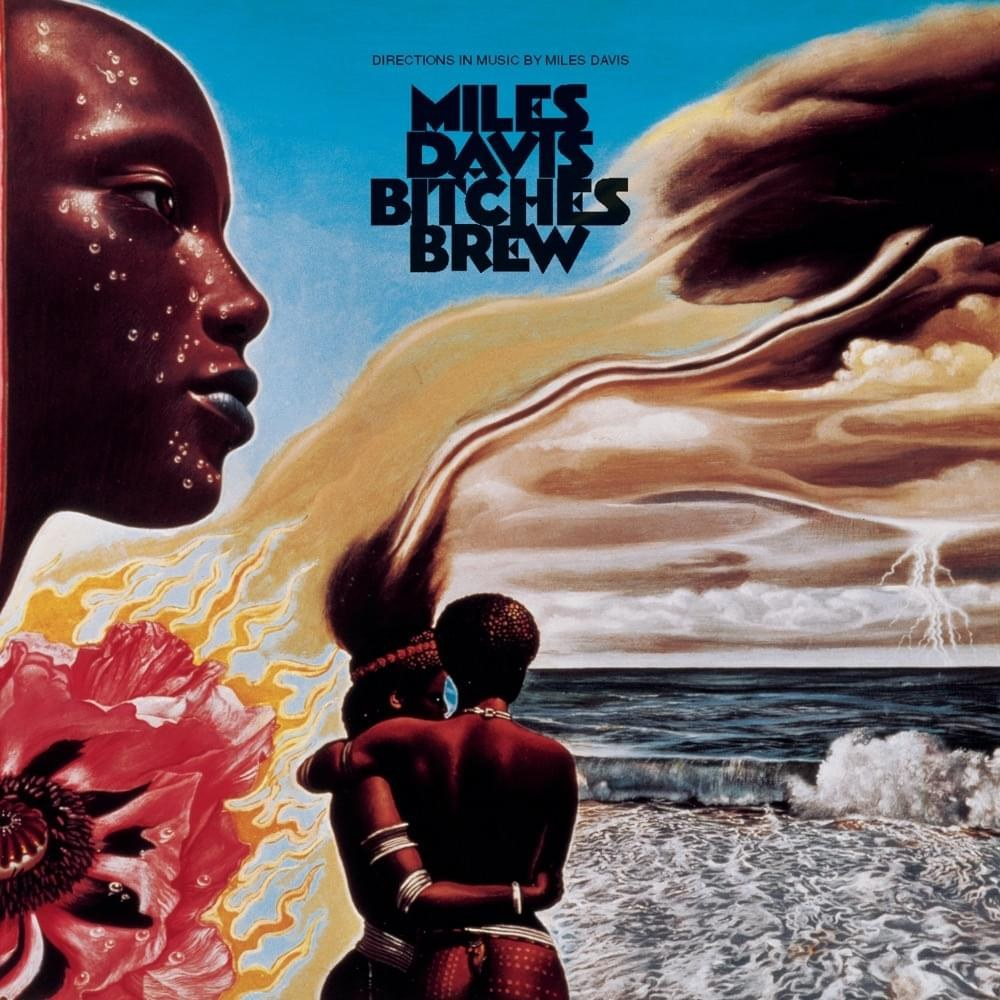

Last week we spoke about how experiences can be contextual, and about how people can have entirely different reactions to the same experience.

Bitches Brew was incredibly divisive when it released, but has now proved to be influential. I think everyone can agree that the album cover still slaps.
But as designers, we need to focus on creating pleasant experiences for a wide range of people. While we strive to create "good" experiences, from a brand standpoint, we want to avoid "bad experiences" at all costs (due to negativity bias, or horn effects). So how do we understand the context behind an interaction for such a wide range of people?
Breaking down a large market into smaller parts makes things a whole lot easier. We might divide the entire market into parts based on, say, geographies. Marketing something in India is very different from marketing something to even Indian-Americans. (the latter of course being both a geographic and ethnic segment)
We could divide based on age. (Are you 18–24? 25 to 32? Maybe 16 to 44?). Or better yet, we could divide based on generations. (If you've ever wondered exactly what a millennial is, ask a designer. Or ask a group of designers and watch them debate?). After all, generations definitely have shared experiences, right? And we're trying to capture the similarities in prior experiences to understand context.
A lot is dependent on how we choose the criteria to divide up the user base. Often a single user could represent multiple segments. Here's a great video explaining how some of these divisions can get fuzzy and complex. And being too sharp or direct with our criteria can leave us with no real insight other than the segment itself. (Okay, so Gen X are between 40 and 60. But do they still want their MTV?). What if instead of an excel sheet, we could come up with a profile of an ideal customer?
User Personas are just that. Instead of a table of numbers, user personas pull together segmentation data and create an "ideal user" (or users). It might include age, gender, a fictional (but data derived) background, maybe some preferences, and other fun facts.
User personas are great in that they put a face to the user. Granted, its usually just a stock photo, but putting a face to the data makes it easier to empathize with the user. And that's important. We're trying to really understand their needs, and being able to empathize with a user's needs is like 90% of design. (Black turtlenecks are the other 10%)
But segmentation and user personas are not perfect. There is a lot we can lose when we bucket people into these categories.
First, if the categorization isn't done with enough data to support it, then insights we draw from the personas could be very very wrong. For example, it might be easy to consider that social media is the domain of millennials and younger generations. But the rise of the so-called "Silver Surfers" shows that older populations are flocking to the internet and social media. And while the largest market still remains those aged 16–44, that market has remained fairly consistent in terms of numbers, while the over 75's has grown substantially in the last few years.
The other thing we might miss are the outliers. People who may fit into a certain segment, but may not conform with any potential user persona. For example, though I may fit neatly into the "Millennial" category, I'm not an avid user of social media. It's always interesting to examine these outliers and rare populations, to understand their reasons for staying away. In some cases, they could just be outliers. But they might also represent a possible potential market, a use-case that hadn't been previously considered, a possible problem in the user experience. They could also be the early adopters or taste-makers, that represent the initial movement away from a certain trend, and the start of a new one. At some point, "cord cutters" would have been seen as outliers, but today represent a sizeable, and growing, market segment.
There's also the potential to become a slave to the rhythm segments/personas. In certain cases it might be good business to create products that are hyper-targeted at certain segments. You see this with a lot of phone and laptop manufacturers that are putting out products for every possible niche. Unfortunately, this can often lead to cannibalization, or option paralysis. Which is why Microsoft and Apple focus on releasing just a few versions of Windows or iPhones, that aim to appeal to a wide range of users.
The final potential problem is in how it shapes our approach to design. It might be easy and lucrative to focus on the big chunk. The personas that cover 80% of the market. But much like the outliers, looking at users with disabilities, with edge-cases or unique problems, could provide insights and solutions that benefit all users. The case of Smart design and the OXO Good Grips line of products is the poster child for this kind of "inclusive design" approach.
Designing can at times seem really hard. Trying to elucidate the complex needs of a large and diverse user base can feel like "cutting cubes out of fog". Tools such as segmentation and user personas can help provide direction and context for interactions and the need for said interactions. If we can understand things like prior experiences, brand perceptions, and comfort levels with various technologies; we can design better. But at the same time, we need to be aware they are just tools, and just applying them mindlessly isn't always going to produce good results.